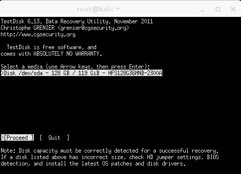
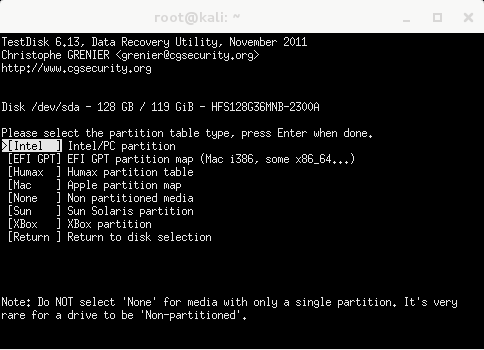
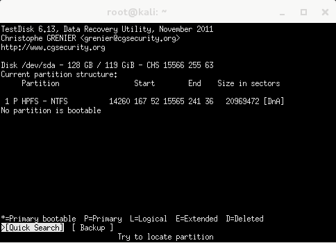
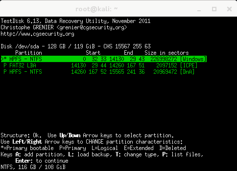
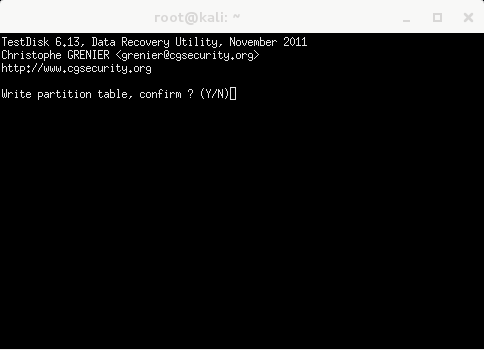
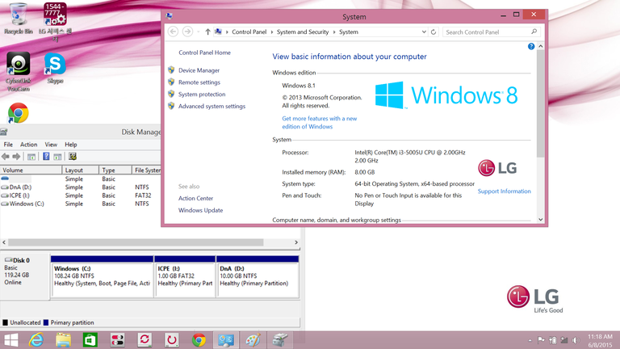

Hello,
I just bought a new laptop, a LG 13ZD950. This laptop can be purchased without Windows in South Korea (like a lot of new laptops in South Korea).
The "Windows-free" version doesn't boot on a system by default: you have to install your own OS.
Before installing Linux, I analyzed the internal SSD: even if the laptop is "Windows-free", Windows seems to be present but the laptop doesn't boot.
By default, you can only see a 10GB NTFS partition (/dev/sda1) called "DnA" containing 3GB of Windows drivers.
I will explain now how to recover a full Windows 8.1 factory copy available in the SSD.
The laptop is brand new. According to S.M.A.R.T, the SSD is new too.
Boot with Kali Linux then use testdisk (from photorec):
kali% sudo testdisk /dev/sda

Use Intel/PC partition and Analyse the hard disk:

You will see the 10GB NTFS partition, called "DnA" containing 3GB of Windows drivers.

The Quick Search option discovered 2 new partitions:

The "Windows" partition contains a fully bootable Windows 8.1 system.
The "ICPE" partition is a rescue partition allowing the reinstallation of Windows 8.1 from scratch.
Now confirm the Windows partition as a bootable partition:

Reboot now!
The Windows initialization system will ask the user name, the computer name and the default preferred color. After this, you have now a fully working Windows 8.1 system with a "Windows-free" LG laptop. Enjoy!
Hello Windows 8.1:

published on 2015-06-09 00:00:00 by Pierre Kim <pierre.kim.sec@gmail.com>